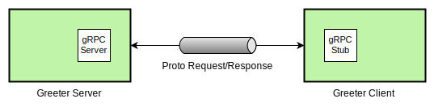
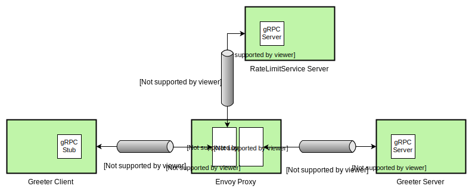

Envoy, gRPC, and Rate Limiting
Envoy is a lightweight service proxy designed for Cloud Native applications. It’s also one of the few proxies that support gRPC, which is based on the H2 (HTTP/2) protocol. gRPC is a high performance RPC (Remote Procedure Call) framework and it supports a plethora of environments.
In this post, we’ll be building a Greeter application in C++ using gRPC and Protocol Buffers, building another gRPC application in Go that implements Envoy’s RateLimitService interface, and finally deploying Envoy as a proxy for the Greeter application while leveraging our Rate Limit service to create backpressure.
The gRPC Greeter Application
We start by installing gRPC and Protobuf, and build the Greeter application in C++. You can also build this application by picking one of the other languages listed in the docs; however, I’ll be using C++ for the purpose of this post.
Below is a schematic for the Greeter application.

Once we run the Greeter application, we should have the following output on the console.
$ ./greeter_server
Server listening on 0.0.0.0:50051
$ ./greeter_client
Greeter received: Hello world
Upgrading The gRPC Greeter Application
Let’s now enhance the Greeter application to respond with a request count prefix
instead of the static “Hello” prefix. To do so, simply update the
greeter_server.cc implementation as shown below.
// Logic and data behind the server's behavior.
class GreeterServiceImpl final : public Greeter::Service {
+ int counter = 0;
Status SayHello(ServerContext* context, const HelloRequest* request,
HelloReply* reply) override {
- std::string prefix("Hello ");
+ std::string prefix(std::to_string(++counter) + " ");
reply->set_message(prefix + request->name());
return Status::OK;
}
Once you re-build and execute greeter_server, you should see the following
output when you send requests via the greeter_client.
$ for i in {1..3}; do ./greeter_client; sleep 1; done
Greeter received: 1 world
Greeter received: 2 world
Greeter received: 3 world
A Simple Rate Limit Service
Next, we implement a simple Rate Limit service in Go by extending the Envoy’s
RateLimitService
proto interface. To do so, we create a Go project named rate-limit-service and
vendor Envoy’s go-control-plane
and its related dependencies. The go-control-plane project provides Go
bindings for Envoy protos. We also create cmd/server/main.go and
cmd/client/main.go for implementing the Rate Limit service later.
$ mkdir -p $GOPATH/src/github.com/venilnoronha/rate-limit-service/
$ cd $GOPATH/src/github.com/venilnoronha/rate-limit-service/
$ mkdir -p cmd/server/ && touch cmd/server/main.go
$ mkdir cmd/client/ && touch cmd/client/main.go
Once you’ve vendored all dependencies, you should land up with a project structure like below. Note that I’ve only highlighted the packages relevant for this experiment.
── rate-limit-service
├── cmd
│ ├── client
│ │ └── main.go
│ └── server
│ └── main.go
└── vendor
├── github.com
│ ├── envoyproxy
│ │ ├── data-plane-api
│ │ └── go-control-plane
│ ├── gogo
│ │ ├── googleapis
│ │ └── protobuf
│ └── lyft
│ └── protoc-gen-validate
└── google.golang.org
├── genproto
└── grpc
The Rate Limit Service Server
We now create a simple gRPC Rate Limit server which limits every second request.
package main
import (
"log"
"net"
"golang.org/x/net/context"
"google.golang.org/grpc"
"google.golang.org/grpc/reflection"
rls "github.com/envoyproxy/go-control-plane/envoy/service/ratelimit/v2"
)
// server is used to implement rls.RateLimitService
type server struct{
// limit specifies if the next request is to be rate limited
limit bool
}
func (s *server) ShouldRateLimit(ctx context.Context,
request *rls.RateLimitRequest) (*rls.RateLimitResponse, error) {
log.Printf("request: %v\n", request)
// logic to rate limit every second request
var overallCode rls.RateLimitResponse_Code
if s.limit {
overallCode = rls.RateLimitResponse_OVER_LIMIT
s.limit = false
} else {
overallCode = rls.RateLimitResponse_OK
s.limit = true
}
response := &rls.RateLimitResponse{OverallCode: overallCode}
log.Printf("response: %v\n", response)
return response, nil
}
func main() {
// create a TCP listener on port 50052
lis, err := net.Listen("tcp", ":50052")
if err != nil {
log.Fatalf("failed to listen: %v", err)
}
log.Printf("listening on %s", lis.Addr())
// create a gRPC server and register the RateLimitService server
s := grpc.NewServer()
rls.RegisterRateLimitServiceServer(s, &server{limit: false})
reflection.Register(s)
if err := s.Serve(lis); err != nil {
log.Fatalf("failed to serve: %v", err)
}
}
Let’s now start the RateLimitService server as shown below.
$ go run cmd/server/main.go
2018/10/27 00:35:28 listening on [::]:50052
The Rate Limit Service Client
We similarly create a RateLimitService client to validate the server’s
behavior.
package main
import (
"log"
"time"
"golang.org/x/net/context"
"google.golang.org/grpc"
rls "github.com/envoyproxy/go-control-plane/envoy/service/ratelimit/v2"
)
func main() {
// Set up a connection to the server
conn, err := grpc.Dial("localhost:50052", grpc.WithInsecure())
if err != nil {
log.Fatalf("could not connect: %v", err)
}
defer conn.Close()
c := rls.NewRateLimitServiceClient(conn)
// Send a request to the server
ctx, cancel := context.WithTimeout(context.Background(), time.Second)
defer cancel()
r, err := c.ShouldRateLimit(ctx, &rls.RateLimitRequest{Domain: "envoy"})
if err != nil {
log.Fatalf("could not call service: %v", err)
}
log.Printf("response: %v", r)
}
Let’s now test out the server/client interaction by firing up the client.
$ for i in {1..4}; do go run cmd/client/main.go; sleep 1; done
2018/10/27 17:32:23 response: overall_code:OK
2018/10/27 17:32:25 response: overall_code:OVER_LIMIT
2018/10/27 17:32:26 response: overall_code:OK
2018/10/27 17:32:28 response: overall_code:OVER_LIMIT
You should see a corresponding log on the server.
2018/10/27 17:32:23 request: domain:"envoy"
2018/10/27 17:32:23 response: overall_code:OK
2018/10/27 17:32:25 request: domain:"envoy"
2018/10/27 17:32:25 response: overall_code:OVER_LIMIT
2018/10/27 17:32:26 request: domain:"envoy"
2018/10/27 17:32:26 response: overall_code:OK
2018/10/27 17:32:28 request: domain:"envoy"
2018/10/27 17:32:28 response: overall_code:OVER_LIMIT
The Envoy Proxy
It’s now time to bring in the Envoy proxy which will route calls from the Greeter client to the Greeter server while testing the rate with our Rate Limit service implementation. Below is a diagram depicting our final deployment.

Proxy Configuration
We use the following Envoy configuration for registering both the Greeter and
the RateLimitService servers and enabling Rate Limit checks. Note that the
locally deployed services are referred via the docker.for.mac.localhost
address as we’ll later deploy Envoy on Docker for Mac.
static_resources:
listeners:
- address:
socket_address:
address: 0.0.0.0
port_value: 9211 # expose proxy on port 9211
filter_chains:
- filters:
- name: envoy.http_connection_manager
config:
codec_type: auto
stat_prefix: ingress_http
access_log: # configure logging
name: envoy.file_access_log
config:
path: /dev/stdout
route_config:
name: greeter_route # configure the greeter service routes
virtual_hosts:
- name: service
domains:
- "*"
routes:
- match:
prefix: "/"
grpc: {}
route:
cluster: greeter_service
rate_limits: # enable rate limit checks for the greeter service
actions:
- destination_cluster: {}
http_filters:
- name: envoy.rate_limit # enable the Rate Limit filter
config:
domain: envoy
- name: envoy.router # enable the Router filter
config: {}
clusters:
- name: greeter_service # register the Greeter server
connect_timeout: 1s
type: strict_dns
lb_policy: round_robin
http2_protocol_options: {} # enable H2 protocol
hosts:
- socket_address:
address: docker.for.mac.localhost
port_value: 50051
- name: rate_limit_service # register the RateLimitService server
connect_timeout: 1s
type: strict_dns
lb_policy: round_robin
http2_protocol_options: {} # enable H2 protocol
hosts:
- socket_address:
address: docker.for.mac.localhost
port_value: 50052
rate_limit_service: # define the global rate limit service
use_data_plane_proto: true
grpc_service:
envoy_grpc:
cluster_name: rate_limit_service
Deploying The Envoy Proxy
To deploy the Envoy proxy, we copy the above configuration to a file named
envoy.yaml. Then, we can build a Docker image with the following Dockerfile.
FROM envoyproxy/envoy:latest
COPY envoy.yaml /etc/envoy/envoy.yaml
To build the image, run the following command.
$ docker build -t envoy:grpc .
Sending build context to Docker daemon 74.75kB
Step 1/2 : FROM envoyproxy/envoy:latest
---> 51fc619e4dc5
Step 2/2 : COPY envoy.yaml /etc/envoy/envoy.yaml
---> c766ba3d7d09
Successfully built c766ba3d7d09
Successfully tagged envoy:grpc
We can then run the proxy, like so:
$ docker run -p 9211:9211 envoy:grpc
...
[2018-10-28 02:59:20.469][000008][info][main] [source/server/server.cc:456] starting main dispatch loop
[2018-10-28 02:59:20.553][000008][info][upstream] [source/common/upstream/cluster_manager_impl.cc:135] cm init: all clusters initialized
[2018-10-28 02:59:20.554][000008][info][main] [source/server/server.cc:425] all clusters initialized. initializing init manager
[2018-10-28 02:59:20.554][000008][info][config] [source/server/listener_manager_impl.cc:908] all dependencies initialized. starting workers
Updating The Greeter Client
Since we now want to route our Greeter client calls via Envoy, we update the
server port from 50051 to 9211 in its implementation and rebuild it.
GreeterClient greeter(grpc::CreateChannel(
- "localhost:50051", grpc::InsecureChannelCredentials()));
+ "localhost:9211", grpc::InsecureChannelCredentials()));
std::string user("world");
std::string reply = greeter.SayHello(user);
The Final Test
At this point we have the Greeter server, the RateLimitService server and an instance of Envoy proxy running. It’s now time to validate the complete deployment. To do so, we can simply send a few Greeter requests via the updated Greeter client as shown below.
$ for i in {1..10}; do ./greeter_client; sleep 1; done
Greeter received: 4 world
14:
Greeter received: RPC failed
Greeter received: 5 world
14:
Greeter received: RPC failed
Greeter received: 6 world
14:
Greeter received: RPC failed
Greeter received: 7 world
14:
Greeter received: RPC failed
Greeter received: 8 world
14:
Greeter received: RPC failed
As you observe, alternate requests fail with a gRPC status code of 14 i.e.
RPC failed, while 5 out of the 10 requests are successful. This shows that
the Rate Limit service is limiting every second request as designed, and Envoy
rightly terminates such requests on its end.
Conclusion
This post should give you a high level idea of how you can use Envoy as a proxy for your own applications, and should also help you understand how Envoy’s Rate Limit filter works with the gRPC protocol.
Thoughts are much appreciated. :)
Disclaimer: My postings are my own and don’t necessarily represent VMware’s positions, strategies or opinions.